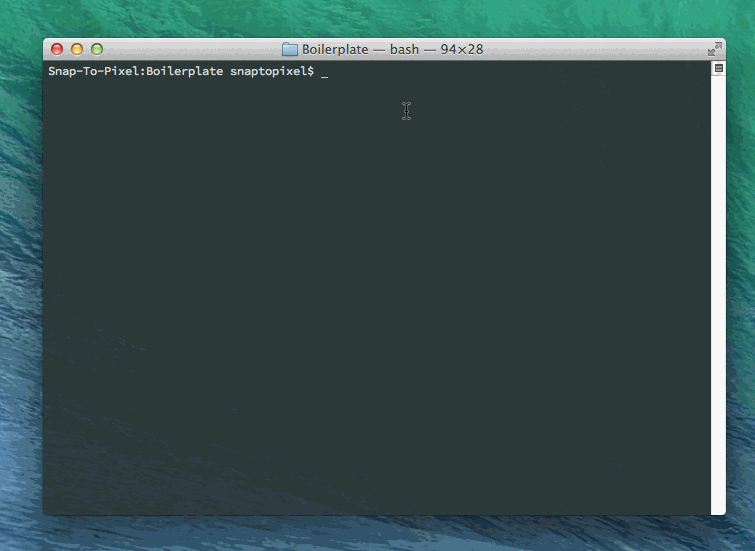

Editing A Theme
If you'd like to switch from your current theme to another, there are a few ways to do it using the grunt get_theme command. You only need to specify a portion of the name or the lgid to search for the correct theme.
- Specify the task followed by a colon and the theme name
grunt get_theme:name - Enter the theme name in the prompt that follows
grunt get_theme - Entering no value in the prompt that follows
grunt get_themewill present a list of all themes that you can choose from.
